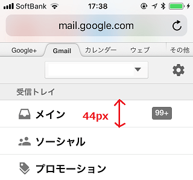

スマホに最適な１行の高さは44pxなのか？
サイトをスマートフォンに最適化する際、メニューなどのリスト部分の１行の高さは何pxに設定すべきでしょうか？
コンテンツの箇所とメニューなどのリスト表示の箇所で違うとは思いますが、ぼくのiPhoneSEでは高さが「44px」に設定されている箇所が多いようです。
■メモ帳
■ブックマーク
■gmail

けれども、ミュージックアプリでは49pxにて設定されていました。
■musicアプリ
なぜ「44px」なのか？
これは謎ですが、おそらくはデフォルトの文字の大きさが何pxと指定されており、その文字の大きさから最適なline-heightが決定され、結果として「44px」になっているのだろうと思います。
フォントサイズによって違ってくると思うので、ユーザー設定で個別に文字の大きさを指定している場合にはこの高さが違ってくるはずです。
また、こちらは未確認ですが、大きめのPLUSタイプのiPhoneでもまた違ってくるかもしれません。
けれども、概ね、レスポンシブウェブデザインで要素などの高さを指定する際には、「44px」あたりを目安に設定するとよいかと思います。
ちなみに、コンテンツ部分のline-heightについても文字の大きさなどによるとは思いますが、文字サイズを16pxか15px程度に指定しておき、line-heightを1.6、つまり160%で指定するのが最適なように感じています。
この場合の高さは、16px×1.6で「25px」程度になるかと感じてますが、コンテンツ部分についてはそのぐらいで設定しているサイトが多いと感じています。